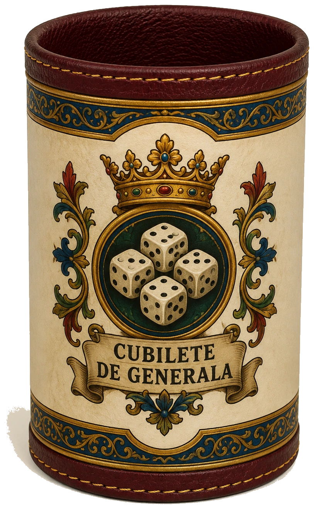
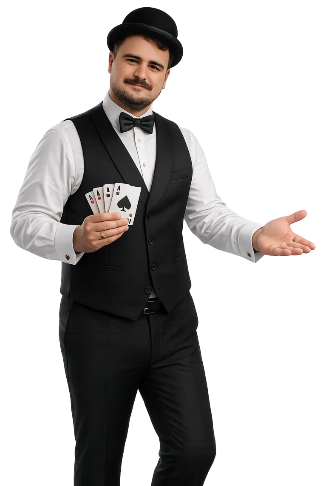
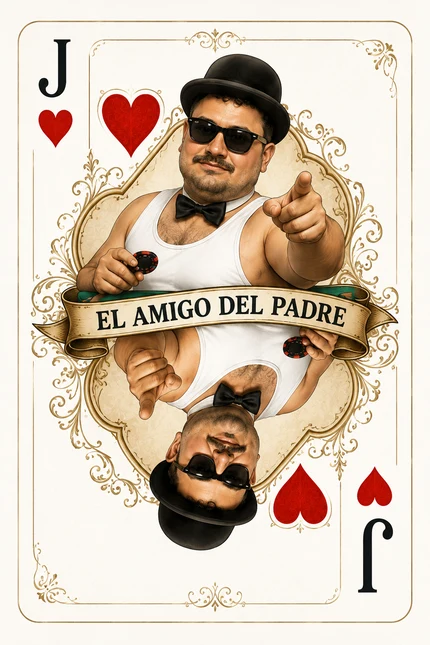
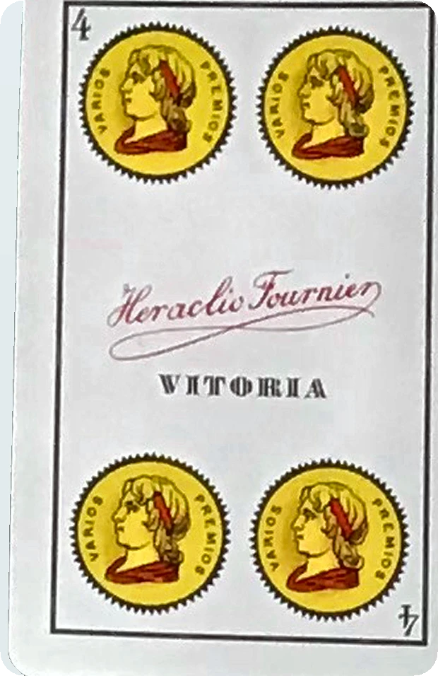
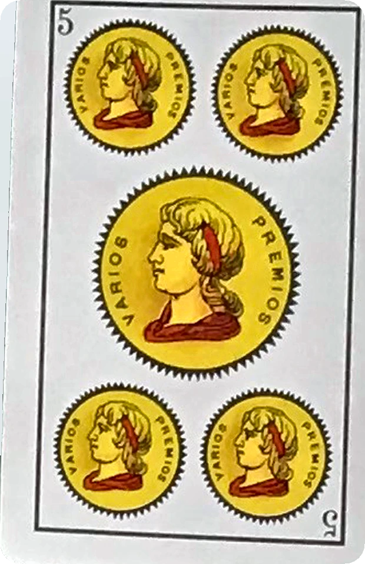
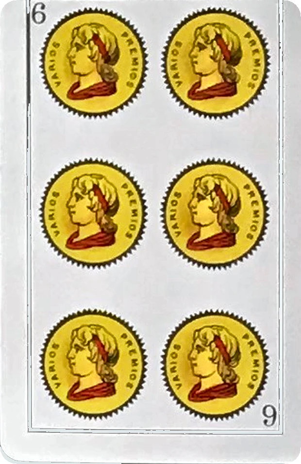
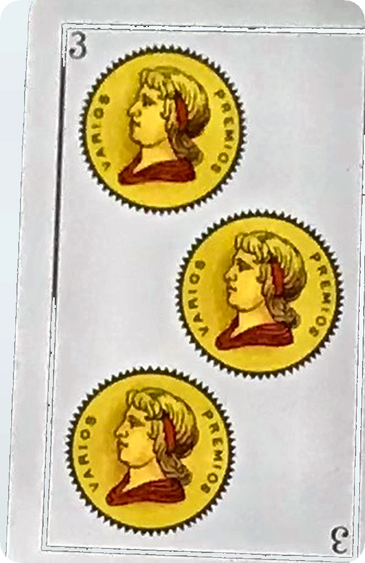

NUEVA SALA CERO · V22
Abre un juego
Abre un juego
y juega.
Diez juegos, acceso directo y una sola interfaz que se adapta automáticamente al móvil o al ordenador.

 T
TCLÁSICO ESPAÑOL
Tute
IA, reglas de casa, tutorial y mesas locales.
Jugar →
⚄CINCO DADOS
Generala
Contra IA o pasando el móvil entre hasta seis.
Jugar →
21ANTON CASINO
Blackjack
Apuestas, doblar, separar y hasta seis jugadores.
Jugar →?● ● ● ●
3–12 PERSONAS
El impostor
Palabra secreta, pistas y votación privada.
Jugar →⌁
4–10 PERSONAS
Chao Pescao
Verdades, mentiras y pesca de faroles pasando un móvil.
Jugar →
♠TEXAS HOLD'EM
Póker
Anton reparte contra IA o en mesa local.
Jugar →


SIETE CARTAS
Chinchón
Escaleras, grupos, cierres y partidas locales.
Jugar →
 15
15SUMA Y CAPTURA
Escoba
Combina quince, captura y limpia la mesa.
Jugar →
 ♛
♛PRESIDENTE
Culo
Rangos, pases y revolución de tres a seis.
Jugar → 10
10UNA CARTA POR RONDA
Es un 10 pero…
Baraja, di la frase y revela una carta.
Jugar →